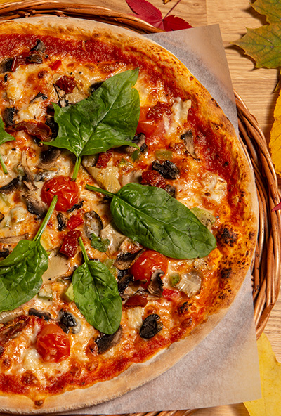

Plante pizza
Vegetarpizza kan lages på mange måter. Her er oppskrifter på blant annet grillet pizza, nan-pizza, blomkålpizza og pizza med egg. Hvilken er din favoritt?
1 pizzadeig
1 stor skje tomatsaus til pizza
100 gr revet ost
1/2 paprika rød/grønn
1/2 avocado
4 sjampinjong
3 cherrytomater
8 sorte oliven uten stein
1 artisjokkhjerte
2 soltørkede tomater
20 gr chevre
Fersk spinat
Maldonsalt og nykvernet pepper
Bak ut pizzadeigen.
Fordel en stor skje tomatsaus utover bunnen.
Legg på en stor neve revet ost (ca. 100 g).
Kutt opp og del paprika, avokado, champignin, cherrytomater, oliven, artisjokkhjerte, soltørkede tomater og chevre.
Fordel det utover hele pizzaen
Stek pizzaen
